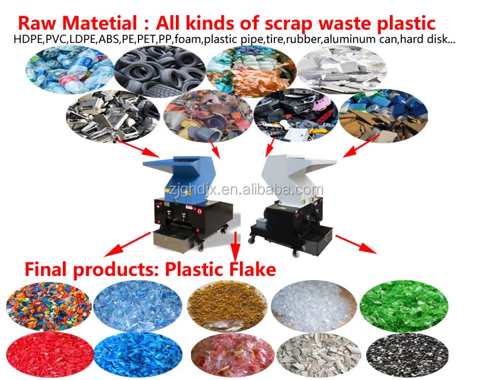

Waste PPR PE Barrel Crusher
Reduce discarded plastic barrels to reusable flakes.
Inquire about this product Prepare a detailed project brief
Equipment overview
The PC series Plastic crusher is specialized in crushing various kinds of plastic materials into different sizes of scraps(3-8mm).
Crushed plastics can be recycled for the reproduction of plastic products.
This machine can help reduce the volume of plastic waste, greatly save costs and resources.
This crusher is designed as tangential feeding so that feeding and swallowing more outstanding.
At the same time, the feed port has a plastic cover curtain to Avoid the problem of material jumping easily by the ordinary crusher machine.
This Model crusher uses a claw blade, the material of the rotating blade holder is high-grade steel material, uneasy to abrade or break, making this waste plastic crusher durable and anti-corrosion cracking.
Technical specifications
Reference configurations from the product catalogue. Confirm output, dimensions and equipment selection for your material and project.
| Model | PC300 | PC400 | PC500 | PC600 | PC800 | PC1000 |
|---|---|---|---|---|---|---|
| Power | 5.5 | 7.5 | 11 | 15 | 22-37 | 30-45 |
| Chamber(mm) | 220x300 | 246x400 | 265x500 | 280x600 | 410x800 | 500x1000 |
| Rotary Blade | 9 | 12 | 15 | 18 | 24 | 34 |
| Fixed Blade | 2 | 2 | 4 | 4 | 8 | 9 |
| Capacity(kg/h) | 100-200 | 200-300 | 300-400 | 400-500 | 500-600 | 600-800 |
| Net diameter(mm) | 10 | 10 | 10 | 10 | 12 | 14 |
| Weight(kg) | 480 | 660 | 870 | 1010 | 1250 | 1600 |
| Dimension(cm) | 110x80x120 | 130x90x170 | 140x100x165 | 145x125x172 | 150x140x180 | 170x160x220 |
Detailed Images
Application
We are specialized manufacturers from China, Reconditioned Plastic Machines, plastic crusher and shredder Mixers suppliers/factory, wholesale high-quality products of crusher and shredder R & D and manufacturing, we have the perfect after-sales service and technical support. Look forward to your cooperation!

Equipment video
Ask about this machine
Waste PPR PE Barrel Crusher